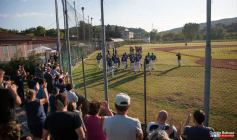

Campionato Nazionale
Vedi Calendario
SERIE B
La nostra prima squadra compete nel campionato nazionale di Serie B, il secondo livello del baseball italiano. Un traguardo importante raggiunto grazie al lavoro di tanti anni e alla dedizione di giocatori e staff tecnico.
Il roster è composto da giocatori esperti e giovani talenti provenienti dal nostro settore giovanile, creando un mix vincente di esperienza e freschezza.
18 giocatori in rosa
Campionato: Apr-Set
Girone Centro-Nord
Allenamenti: Mar-Gio-Ven

Staff Tecnico
#80
Wilfredo Amaro Uzcategui
Manager / Capo Allenatore Venezuela
Venezuela
#33
Gabriele Nerbini
Allenatore / Vicepresidente Italia
Italia
#9
Carlos Daniel Sanchez Pacheco
Allenatore dei Lanciatori Cuba
Cuba
Rosa Giocatori 2025
#0
Niccolò Bucci
UTL
#1
Alessandro Ferrini
P/SS
#3
Ettore Della Nave
OF/P
#4
Giovanni G. Beudean
P/OF
#5
Marco Mastroianni
2B/3B
#6
Simone Geri
OF
#7
Silvano Albano
OF/IF
#8
Tommaso Panichi
OF
#12
Francesco Grassi
1B/DH
#14
Leonardo Scarpulla
OF/2B
#19
Simone Baratella
1B/3B
#22
Giuseppe G. Grado
P
#25
Lorenzo Scarpulla
C
#32
Filippo Anichini
3B/SS
#38
Antonio Parrini
SS/3B
#59
Lapo Biondi
2B/SS
#89
Daniele Silvestri
P
#90
Alessandro Rrethatori
C